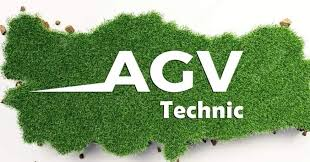
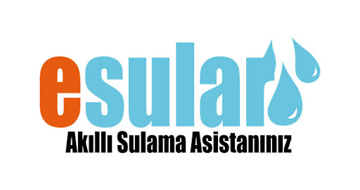

Hakkında
Lotus Tarım Teknolojileri, 2024 yılında deneyimli ziraat mühendisi Ender GÜN tarafından kurulmuştur. Ege Üniversitesi Ziraat Fakültesi'nden 2017 yılında mezun olan GÜN, tarım ve hayvancılık sektöründeki birikimleriyle akıllı tarım konseptiyle buluşmuştur. Teknolojinin tarım sektöründe de ilerlemesi, GÜN'ü yeni adımlar atmaya teşvik etmiştir.

AGV Technic
LAGV Technic, hassas tarım için ideal bir çözümdür. GPS ve Sim Kart ile kesintisiz kullanım, Baz İstasyonu desteğiyle 25 km yarıçapında sorunsuz çalışma sağlar. Android tabanlı tablet kolay kullanım sunar. Kablo trafiği olmadan hızlı kurulum ve çeşitli çalışma modlarına uygun. Otomatik dönüş, gece modu ve online teknik destek özellikleriyle donatılmıştır. Otomatik Pivot-U Dönüşü Kontrolü ile "0" hata payı sunar. Ücretsiz güncellemelerle yeni özelliklere erişim imkanı sağlar.
Daha FazlaKolay Kullanım
Sistemin sahip olduğu basit arayüzlü android tabanlı tablet ile oldukça kolay kullanım sağlar.
Hızlı ve Kolay Kurulum
Kablo trafiği olmadan traktör kabininde değişikliğe gitmeden kolay ve hızlı kurulum ile otomatik dümenleme sisteminizi vakit kaybetmeden kullanmaya başlayabilirsiniz.
U Dönüşü
Sıra başlarında otomatik olarak dönüş imkanı sağlar.
Gece Modu
Gece modu sayesinde sisli ve kötü hava koşullarında sorunsuz çalışabilme imkan sağlar.
Esular
Esular, tarım ve su yönetimi sektörlerinde kullanılan bir yapay zeka destekli su ve enerji yönetim platformudur. Pil ile çalışma, kablosuz kullanım, farklı tipteki vanaları kontrol etme yeteneği ve sensörler aracılığıyla otomatik geri beslemeli kontrol gibi özellikleri ile öne çıkar. Sürdürülebilir tarımı teşvik eden Esular, pratik ve kolay kullanım sağlar.
Daha Fazla 
Pille Çalışır
Vana kontrol sistemleri, sensörler ve toplama ünitelerinin herhangi ek enerjiye ihtiyacı yoktur. Dahili pilleri ile uzun süre müdahale olmadan çalışma imkanı sunar.
Kablolama Gerekmez
Sulama sisteminin çalışabilmesi için herhangi kontrol ve enerji kablolamasına gerek yoktur. Tak çalıştır şeklinde kullanılabilir. Pratik ve kolay kullanım sağlar.
Vana Kontrol
Her tip ve çapta hidrolik vanalar rahatlıkla kontrol edilir. Farklı tip vanaların açma kapama işlemi de kablosuz olarak yapılır. 10 Km'den kablosuz kontrol imkanı sunar.
Sensörle Otomatik Kontrol
Basınç, akış, gibi pilli ve kablosuz sensörlerden aldığı geri bildirimler ile tam otomatik geri beslemeli kontrol sağlar.


Uygulama Alanları


Blog

Kuru Fasulye Yetiştiriciliği
Kuru fasulye yetiştiriciliği, ülkemizde nohuttan sonra en çok üretimi yapılan baklagildir. Kuru fasulye topraktan önemli miktarlarda besin maddesi çeker.
Daha Fazla
Tarla Faresi Mücadelesi
Tarla faresi, ekseri kısa ve tıknaz vücutlu bir yapıya sahiptir. Başları oldukça büyük, burunları basık, kulakları ise kısa bir görünüme sahiptir.
Daha Fazla
Patates Böceği Nedir?
Patates böceği, genellikle patates tarlalarında yaşar. Patates bitkisi (Solanum tuberosum) ve bazı diğer solanaceous bitkiler, bu böceğin beslendiği ve ürediği ana bitkilerdir.
Daha Fazla
Drenaj Nedir?
Drenaj, suyun belirli bir alandan etkili bir şekilde uzaklaştırılması işlemidir. Genellikle tarım alanları, inşaat sahaları ve bahçelerde kullanılan drenaj sistemleri, toprakta biriken fazla suyun tahliye edilmesini sağlar.
Daha Fazla